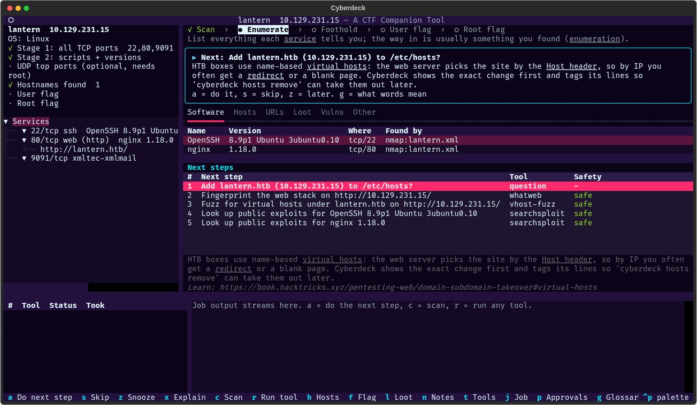
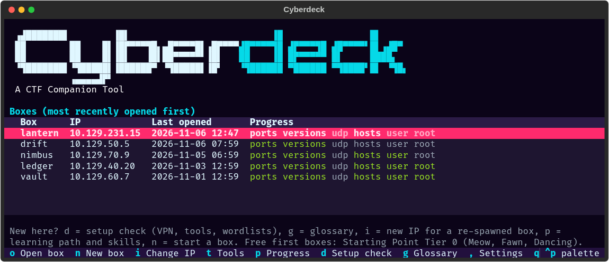
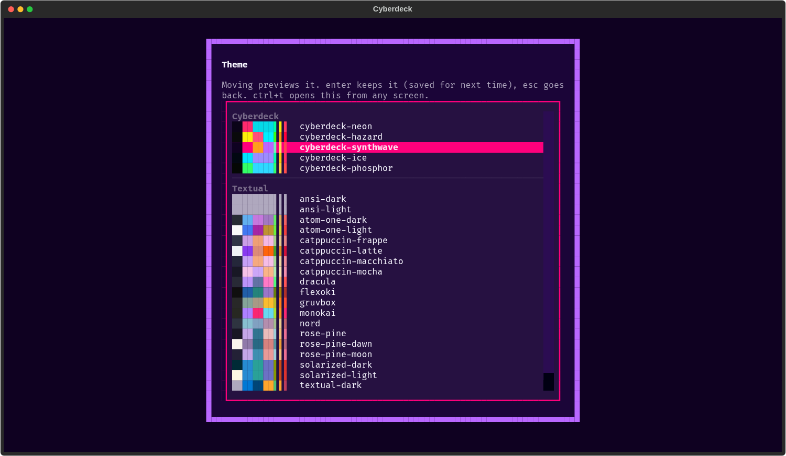

What is Cyberdeck
Most of a Hack The Box machine is enumeration: run nmap, read the output, decide which tool to run next,
remember the flags, copy the vhost into /etc/hosts, try the creds you found somewhere else…
Cyberdeck does that bookkeeping and the “what next?” so you can focus on the box.
It's a keyboard-driven terminal app for Kali Linux (also usable in a browser). Each box gets its own folder holding everything found on it and every command run. The dashboard shows where you are, what's been found and the next steps worth trying, with the reason for each.

The dashboard for a box: progress on the left, findings and the next steps (with why) on the right, jobs and their output below. (Made-up box.)
What It Is (and Isn't)
Cyberdeck is not an autopilot. It doesn't exploit boxes or chase flags for you. It's the notebook, checklist and tool launcher that sits next to your own terminal and browser:
- It tracks the box. Ports, services, versions, hostnames, URLs, users, credentials, hashes, flags, notes and every command run, all in the box's folder. Progress comes from that record, so you can stop and resume any time.
- It suggests next steps. From what's known so far, it ranks what's worth trying next and explains why, with a link to learn more. You decide what to run, and can skip or snooze any suggestion.
- It wraps the tools. nmap, feroxbuster, ffuf, netexec, smbmap, hashcat, searchsploit and 40 more run through a Run dialog with presets, explained flags and a preview of the exact command. Their output is saved and parsed into findings.
A lot of the work still happens outside it, as it should: reading the site in your browser, Burp, poking at a login form, catching a reverse shell, enumerating as a user, privilege escalation. You bring what you learn back into Cyberdeck (see Adding What You Find), and the suggestions use it.
What It Does
| Feature | What it does |
|---|---|
| Guided recon | New-box wizard, HTB VPN check, two-stage nmap (all ports, then scripts and versions on the open ones), each run approved by you and imported automatically. |
| Tool plugins | 45+ Kali tools described in YAML: web, SMB/AD, RPC, creds, forensics, exploit research. Add your own without writing Python. |
| Next-step suggestions | Rules turn findings into ranked next steps with a why: fingerprinting a site, adding vhosts to /etc/hosts (diff shown first), fuzzing, SMB/AD enumeration and exploit lookups. |
| Per-box findings store | Services, versions, hostnames, URLs, users, credentials, hashes and flags, from tool output or added by you, each with where it came from. Secrets are masked in the UI. |
| TUI and browser UI | A keyboard-driven Textual dashboard. cyberdeck --web serves the same UI in your browser. |
| Learning aids | Beginner layout with a journey bar, plain-English job summaries, a glossary, per-service checklists, a graded “I'm stuck” flow and a rabbit-hole timer. |
| Journal and write-ups | The box's story builds itself from what you did. Draft a write-up (loot and your paths masked), then read and edit it in the app. |
| Claude Code over MCP | cyberdeck mcp lets Claude Code read findings, preview commands and run safe tools. Anything riskier waits for your approval. |
| Cyberpunk themes | Five neon palettes plus every Textual theme; ctrl+t switches theme from any screen, with live preview. |
Requirements
- Kali Linux, or another Linux with the tools you want installed.
- Python 3.11+ and uv.
- nmap, plus whichever Kali tools you want Cyberdeck to drive. It detects what's installed
and only offers those;
cyberdeck doctortells you what's missing and how to fix it. - A Hack The Box VPN connection (
.ovpn) for HTB targets.
Install
curl -LsSf https://astral.sh/uv/install.sh | sh # install uv (once) git clone https://github.com/DanDreadless/cyberdeck.git cd cyberdeck mkdir -p ~/.config/cyberdeck && cp .env.example ~/.config/cyberdeck/.env # your settings uv tool install -e . # puts `cyberdeck` on your PATH uv tool install -e ".[web]" # ...or with the browser UI
Then check your setup:
cyberdeck doctor # VPN, tools, wordlists, sudo and clock, with the fix for each problem cyberdeck # open the TUI
Your First Box
Cyberdeck opens on your box list: every box with its IP, when you last worked on it, and how far you got (ports, versions, UDP, hosts file, user and root flags).

The box list. (Made-up boxes.)
Create the box
Press n and give it the machine's name and IP. Cyberdeck creates a folder for it under your
workspace (default ~/Documents/htb).
VPN check and scan
Cyberdeck checks the box is routed through your HTB tunnel (and offers to start it if not), then offers the two nmap stages. You approve each one in the Run dialog; results are imported automatically.
Work the box
Use the dashboard to keep track and decide what's next: a does the top suggestion,
r runs any tool, and everything you find by hand goes in Loot, notes or the flag prompt.
Updating
The install above is editable: the cyberdeck command runs the code in your clone. Pull the
latest and restart Cyberdeck:
cd cyberdeck && git pull
If a release changes Cyberdeck's dependencies, refresh the install too:
uv tool install -e . --reinstall # or -e ".[web]" for the browser UI
The Dashboard
Open a box from the list (enter). The keys you'll use most:
| Key | Does |
|---|---|
a / enter | Do the top suggested next step |
r | Run any tool |
c | Scan (nmap stages, UDP) |
h | Add the box's hostnames to /etc/hosts (diff, confirm, sudo) |
l / n / W | Loot (add creds, users, hashes by hand with a), notes, write-up |
k / ! | Methodology checklist / “I'm stuck” |
f | Record a flag |
o | Journal: the box's story so far |
ctrl+t | Change theme |
= / ctrl+l | Reset pane sizes / redraw the screen |
? / ctrl+p | Every key on this screen / search all actions |
Drag the dividers (or use ctrl+arrows) to resize the panes. Sizes are remembered and always
fitted to the terminal, so the findings and next steps keep a few rows however small the window.
Running Tools
Every tool runs through the Run dialog: presets, each useful flag explained, extra
arguments, sudo on or off, and a live preview of the exact command line before anything touches the target.
Inputs such as the URL, domain and wordlist are pre-filled from what's been found (for example the box's
hostname once it's in /etc/hosts), and you can save your choices as a default, for every box or
just this one.
Tools that do the same job form a group: dir-bruteforce uses whichever of feroxbuster, gobuster,
dirsearch or ffuf you have and prefer. Every job's exact command, output and errors are saved in the box's
raw/ folder, then parsed into findings, and you get a plain-English summary of what it found
(or a likely cause when it failed).
Suggestions
After every change, rules look at what's known and rank the next moves, each with a short why and a
link to learn more: fingerprint the site, add its hostname to /etc/hosts, look for hidden paths
and vhosts, enumerate SMB, look up public exploits for a version, try a password you found on SMB.
They're suggestions: run one, s skip it, z snooze it until something new turns up,
or do something else entirely. If you want, cyberdeck auto chains the safe recon
ones (each command still shown). Anything tagged intrusive, brute-force or exploit only ever runs when you
confirm it.
Adding What You Find
Bring the results of your hands-on work back into Cyberdeck yourself:
- add credentials, users and hashes you found by hand in Loot (
l, thena), and record flags withf - keep free-form notes in the box's
notes.md(n) - tick checklist items you did by hand (
k), add hostnames (cyberdeck hosts add <name>), or import an nmap scan you ran yourself (cyberdeck import)
The suggestions use whatever you add, the same as tool output: a password you typed in can prompt “try it on SMB” or, on Active Directory, a Kerberoast.
Hosts File & New IPs
Cyberdeck edits /etc/hosts only after showing you the exact diff. It needs your sudo password
(typed into sudo itself, never into Cyberdeck) and tags its lines with # cyberdeck:<box>,
so cyberdeck hosts remove can cleanly take them out again.
HTB gives a box a new IP when it's re-spawned. Highlight it in the box list and press i (or run
cyberdeck set-ip): everything you found is kept, and Cyberdeck offers to move the box's hosts line
to the new address.
Learning Aids
New to HTB? All of these are on by default and can be switched off one by one in Settings (,).
- Beginner layout (
bswitches to expert): a journey bar (Scan › Enumerate › Foothold › User flag › Root flag) and a Now card with the next step in plain words. - Job summaries: what each job found and why it matters, with passwords, hashes, new hostnames and versions to look up called out. Passwords spotted in tool output are offered for Loot.
- Glossary (
g): underlined words such as vhost, LHOST and SUID explained in plain words. - Checklist (
k): what to check per service and phase, including manual checks like reading the page source orsudo -l, ticking itself as tools run. - I'm stuck (
!): what you haven't tried yet, then general hints for your situation if you ask. Never spoilers for the box. - Working on… (
w): say what lead you're chasing and Cyberdeck warns when it stops producing anything. - Progress (
pon the box list): a suggested learning path (Starting Point, then easy retired boxes) and the skills you've practised.
Journal & Write-ups
Recording a flag asks three quick, optional questions: what got you in, what you'd check sooner next time,
and which techniques you used. They feed the box's journal (o) and your
playbook across boxes, so I'm stuck can say “you've seen this before: on
Soccer you…”.
From the journal, e drafts a Markdown write-up with passwords, flags and your
paths masked. W on the dashboard reads and edits it, rendered as Markdown. A
WRITEUP.md written by hand or by Claude over MCP shows up there too.
Themes
Five cyberpunk palettes (neon, the default, plus hazard, synthwave, ice and phosphor) and every built-in
Textual theme. ctrl+t opens the theme picker from any screen; moving through the list previews
each theme live, and enter keeps it.

The theme picker, previewing synthwave.
Claude Code (MCP)
claude mcp add cyberdeck -- cyberdeck mcp -t soccer
Claude Code can then read the box's findings and suggestions, preview commands and run safe
tools. You see the exact command first. Intrusive tools, anything needing sudo and every
/etc/hosts edit wait in an approvals queue (p in the TUI, or
cyberdeck approvals), and there's no setting to skip that. Passwords, hashes and flags are masked
before they reach the model.
Claude can also record what you find outside Cyberdeck (findings, notes, flags), so the suggestions use it.
For a remote client, cyberdeck mcp --http 127.0.0.1:8765 serves over HTTP with a bearer token
(CYBERDECK_MCP_TOKEN); reach it through an SSH tunnel.
Command Line
Everything in the TUI works from the shell too. The most useful commands:
cyberdeck new soccer --ip 10.129.x.x # create the box, check the VPN, scan cyberdeck list # boxes, last opened first, with progress cyberdeck resume soccer # make it current, show progress, offer the next step cyberdeck set-ip 10.129.x.y # HTB re-spawned the box cyberdeck scan [-s 1|2|udp] # nmap stages via the Run dialog cyberdeck run whatweb # one tool through the Run dialog cyberdeck run dir-bruteforce -p quick # your preferred of feroxbuster/gobuster/dirsearch cyberdeck suggest # next steps, with why cyberdeck suggest run 1 # run one (or answer its question) cyberdeck auto # work through the safe suggestions cyberdeck hosts add # add the box's hostnames: diff, confirm, sudo cyberdeck show # services, versions, hostnames, OS cyberdeck flag user <flag> # record a flag cyberdeck stuck [--hint] # what you haven't tried yet cyberdeck writeup [--stdout] # Markdown write-up, loot masked cyberdeck tools # installed tools, versions, group picks cyberdeck --web # the UI in your browser on 127.0.0.1:8000
cyberdeck --help lists every command. Which box a command acts on: -t <box>,
else the box folder you're in, else the current box (cyberdeck use).
Adding a Tool
Tools are YAML manifests. Copy plugins/tools/_template.yaml into a category folder (or
~/.config/cyberdeck/plugins/tools/), fill it in, and validate it:
cyberdeck tools check ~/.config/cyberdeck/plugins/tools/web/mytool.yaml
The template's comments explain each field, and the existing manifests are working examples. Suggestion rules
(rules/) and learning content (learn/) can be overridden the same way, from
~/.config/cyberdeck/.
Configuration
Settings live in ~/.config/cyberdeck/.env; .env.example lists every variable with a comment.
| Variable | What |
|---|---|
CYBERDECK_WORKSPACE_ROOT | Where box folders go (default ~/Documents/htb) |
CYBERDECK_VPN_DIR / CYBERDECK_VPN_CONFIG | The folder with your HTB .ovpn files / one specific file |
CYBERDECK_SCOPE_EXTRA | Extra targets to allow, beyond the HTB ranges |
CYBERDECK_MCP_TOKEN | Bearer token for cyberdeck mcp --http |
Preferences (layout, theme, learning aids, tool choices) are set in the TUI's Settings screen
(,) and saved to ~/.config/cyberdeck/config.yaml.
Safety
- A scope guard checks every job's target. Only the HTB lab ranges
(
10.10.0.0/16,10.129.0.0/16) are allowed by default; anything else must be added explicitly withCYBERDECK_SCOPE_EXTRA. - Nothing intrusive, brute-force or exploit-tagged ever runs without your explicit confirmation, including when Claude Code is driving.
/etc/hostschanges are shown as a diff, need your sudo password, and are tagged so they can be cleanly undone.- Loot (credentials, hashes, flags) stays in the box folder, is masked in the UI and in write-ups, and is never written to global logs.
Developing
Python 3.11+ and uv.
uv sync # .venv + dev dependencies from uv.lock uv run pytest # tests (no Kali tools, network or VPN needed) uv run ruff check . && uv run ruff format . # lint + format uv run mypy src # strict type checks
Tests use fixtures, a fake nmap and a fake tool, so they never touch the network.
License
Cyberdeck is released under the MIT licence. See the repository for the full text.